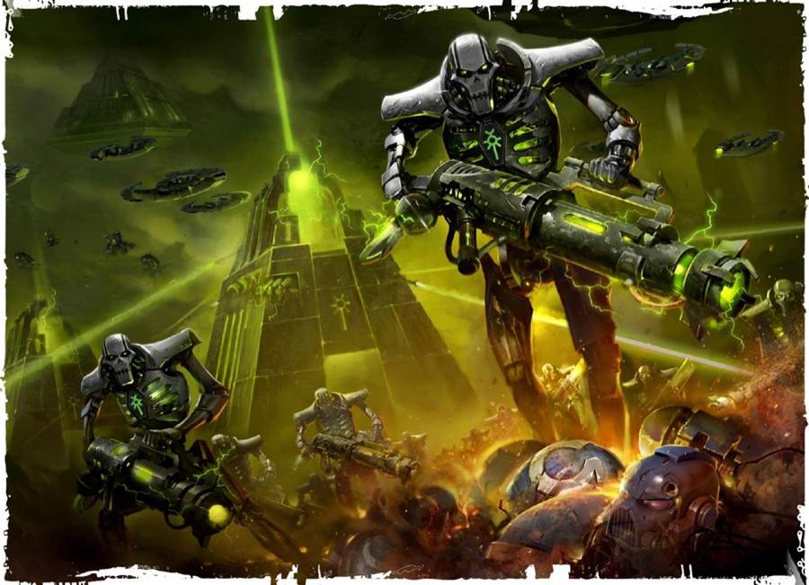

Necrons
| Necrons Formerly the Necrontyr | |
|---|---|
 Ankh of the Triarch, the sigil of the Necron race | |
| Classification | Xenos; undying machine-intelligences in living-metal bodies |
| Origin | The Necrontyr, a short-lived species of the galactic core, transformed by biotransference |
| Original ruler | The Silent King Szarekh, last of the Triarch |
| Territory | Tomb Worlds scattered across the galaxy; the crownworld of Mandragora; the hidden dynasties |
| Enemies of old | The Old Ones, the Aeldari, the C'tan (their former masters) |
| Sleep | About sixty million Terran years (the Great Sleep) |
| Leaders in the Era Indomitus | |
| Szarekh, the Silent King; Imotekh the Stormlord (Sautekh); Trazyn the Infinite; Anrakyr the Traveller; Orikan the Diviner; Illuminor Szeras | |
| Principal wars against the Imperium | |
| Sanctuary 101 (897.M41); the Imotekh campaigns; the Damnos wars (973.M41–); Borsis (926.M41); the Era Indomitus awakenings | |
The Necrons are an ancient xenos race of living-metal warriors. They are the remains of the Necrontyr, a short-lived organic species that gave up its flesh for immortality at the price of its souls, and they are served by a stratified court of lords, immortals and warriors who have slept for some sixty million Terran years. They lie in the great Tomb Worlds across the galaxy, and in the 41st millennium these have begun to wake. To the Imperium the Necrons are the most ancient of the galaxy's hostile powers, and one of its most mysterious: they do not parley, do not need to eat or breathe, are not subject to fear and cannot be starved or weakened by attrition.[1][2]
The Imperium has met Necrons for many centuries without recognising them for what they were. The first Imperial scholars to put a name to the Tomb Worlds were the Inquisitors of the Ordo Xenos in the 41st millennium, and even then the Inquisition suppressed the knowledge. The Necrons have since proven to be a serious war power, with a hard core of undying warriors and a technology far beyond the Imperium's, although they are divided into separate dynasties with their own aims and have no single leader.[3]
In the Era Indomitus the Tomb Worlds have been awakening in greater numbers than at any time in recorded history. The return of the Silent King, the opening of the Great Rift and the pressure of the Tyranids on the galaxy's edge have brought many Necron dynasties out of hiding, and the Imperium is reported to be at war with them on a dozen fronts.[4]
Origins
[edit]The Necrontyr
[edit]The Necrontyr were a species native to a world in the galactic core, bathed in the radiation of a hard sun, and they lived brief lives. Imperial scholars, working from Aeldari and Necron sources, describe an ancient civilisation of great technical ability that was wasted by the shortness of its life. It grew weary of its own mortality and was drawn into bitter feuds with the longer-lived and psychically gifted Old Ones, who ruled the galaxy at the time. The Necrontyr did not have the psychic abilities of the Old Ones and so could never join them as equals. They came to hate the Old Ones, and in time to seek the means of striking them down.[1]
The C'tan and biotransference
[edit]The Necrontyr's rulers, a council called the Triarch, were approached by the first of the C'tan, entities of pure energy who fed on stars. Imperial accounts of this meeting, which are based on Necron records and are for that reason contradictory, hold that the one called the Deceiver offered the Necrontyr the immortality they craved. The price was biotransference: the whole species was to be transferred into bodies of a metal that could not die, and the C'tan would feed on the energies of their souls. The last of the Silent Kings, Szarekh, accepted, and his people marched into the bio-foundries. The result was the Necrons, a people with immortal bodies and without souls.[1]
The War in Heaven
[edit]The Necrons fought the Old Ones and their servant species in the War in Heaven. The newborn Necrons were powerful and without fear, but the Old Ones' psychic power was a weapon against which they had no defence, and the war was long. It ended when the C'tan struck with a means of silencing the Warp, and the Old Ones were driven out of the galaxy. According to the Necron account, the Silent King then led a revolt against his masters, with weapons made to unmake C'tan, and shattered them into thousands of fragments, the C'tan shards, each of which was imprisoned in a tesseract vault. The Silent King's last command to his people was that they were to sleep in their Tomb Worlds until the younger races, including the Aeldari who had risen from the Old Ones' ruins, had burned out, and then awaken to take the galaxy back. He then left the galaxy, and the Necron dynasties went to sleep.[1][5]
The Great Sleep and the awakening
[edit]The Great Sleep lasted some sixty million Terran years. Not all the Tomb Worlds survived it: many suffered radiation damage, stasis failures or the intrusion of mortal species, and the Necrons that woke from them were incomplete. Some dynasties have lost the memory of why they exist. The first Tomb Worlds are recorded to have stirred in the late 30th millennium, as the Great Crusade spread across the galaxy, and others woke later, among them one that stirred during the wars of the Apostles of the Blind King in the 37th millennium. The great mass of them has risen only in the last few centuries, and with the opening of the Great Rift, their awakening has become a flood.[1][2]
Awakened Necrons find a galaxy that is not as they left it. Their stasis-crypts lie beneath worlds that have been settled by the Imperium or by the Aeldari, or that have been built over by mankind. The Necron warriors do not use the language of the Imperium, and the first encounter is almost always an attack. The Necron lords of the Tomb Worlds consider the new races to be vermin on their property and move to cleanse them, or, when the occupants have a use, enslave them. Nothing in the Imperium's records suggests that they have ever sought peace with a human state.[3]

Wars against the Imperium
[edit]First contacts
[edit]Some Imperial scholars hold that the slaughter of the Sisters of Battle stationed at Sanctuary 101 in 897.M41 was the first contact between mankind and the Necrons. Others point out that millions of encounters earlier than this went unrecorded, since there were no survivors, or were dismissed as legend. The Imperium of the late 30th millennium and the later ages found tomb complexes on many worlds it conquered, and the Imperium's Mechanicus sealed many of them. An earlier clash, in 805.M41 on the hive world of Morrigar, began when a fight between hive gangs woke a tomb. The Imperium lost contact with the whole planet, and a regiment of Cadian Shock Troops that landed some months later found no trace of its people.[1][5]
The Sautekh and the Stormlord
[edit]The greatest Necron threat to the Imperium in the 41st millennium is the Sautekh Dynasty and its phaeron, Imotekh the Stormlord. Imotekh took control of the crownworld of Mandragora in 781.M41 and set out to conquer the galaxy, beginning with the eastern border of the Imperium. His forces are noted for their skilful use of weather and storm and for their tactical subtlety. In 798.M41, at Somonor, he turned back an Aeldari host of Craftworld Alaitoc and drew the Tomb World's lord into his dynasty. In 910.M41 his campaign was held for several months by the defence of the Forge World Hypnoth, and in 930.M41 his army fell on the ice world of Schrödinger VII. The Black Templars Marshal Helbrecht, who had sworn an oath of vengeance after Schrödinger VII, caught the Sautekh fleet in 985.M41 near the dynasty's core world Davatas, where he destroyed a Necron command ship.[5][1]
The World Engine of Borsis
[edit]The Neokhares Dynasty ruled the artificial Tomb World Borsis, known to the Imperium as the World Engine. In 926.M41 the Imperium launched an assault on it with task forces drawn from fifteen Chapters of the Adeptus Astartes and the Imperial Navy, but even the heaviest weapons of the Imperial fleet could not harm it. It was brought down only when the entire Astral Knights Chapter gave itself to breach the construct and sabotage its command arrays, which dropped its void shields and let the fleet open fire. The assault on Borsis is regarded as proof that the Imperium cannot fight the larger Necron war machines directly and must find another way.[5]
Damnos
[edit]The Mining World of Damnos became, over three wars, the best known battlefield of the Necron war. In 973.M41 the Tomb World beneath the settlement woke with unusual speed and overran the human settlers, and in 974.M41 a counterattack by the Second Company of the Ultramarines failed. The Necrons of Damnos awakened their dolmen gates and used them to retake a strategic point in the sector. In 999.M41, in what the Imperium calls the Second Battle of Damnos, an Ultramarines force came back against a Tesseract Vault that held a C'tan shard. The Third War for Damnos, which the Imperium dates only as the Era Indomitus, began when a Szarekhan Dynasty force invaded; the planet again appealed to the Ultramarines, who had many other duties.[5][4]
Other conflicts
[edit]There are more recorded Necron conflicts with the Imperium than can be set out here. In 900.M41, on Shemnoch, the Shemnoch Dynasty fought the Iron Hands and Brazen Claws Chapters. In 936.M41, on Malbede, the Ultramarines and the T'au fought each other until their fighting woke the Necrons beneath the world, and both sides agreed a truce to face them. In 955.M41, at Devil's Crag on the world of Gehenna, the Silent King and the Blood Angels fought on the same side against a Tyranid splinter fleet. Many Imperial scholars treat this last event as rumour, and it has not been confirmed.[5][1]
The Silent King
[edit]The most important development in Necron history in recorded times was the return of the Silent King. According to Necron sources the Silent King, Szarekh, travelled beyond the galaxy after he gave his last order, and encountered the Tyranids in the intergalactic void. He saw that a devouring species that threatened all life would destroy the Necrons' hope of returning to flesh, and he returned to the galaxy, according to the accounts, in about 744.M41, at a time that coincides with the first contact between the Imperium and the Tyranids. He has since appeared at several points of the Imperium's wars, and his dynasty, the Szarekhan, has taken part in fights against the Tyranids and at Damnos.[1][5]
The Silent King's aims are not fully known to the Imperium. The Ordo Xenos reports that he is working to unify the scattered dynasties, and that he regards the Tyranids and Chaos as the primary threats. Some inquisitors have argued that the Silent King's return offers the possibility that Necron forces could be induced to fight Chaos or the Tyranids. Most Imperial commanders and nearly all the Inquisition regard such a possibility as dangerous folly, since the Necrons have never been known to keep an arrangement that did not serve them, and the Silent King's own purposes lie with the Necron race, not with mankind.[4][3]
The Great Rift and the Era Indomitus
[edit]The opening of the Great Rift has changed the Necron war in two ways. It has hastened the awakening of the Tomb Worlds, and it has weakened the Imperium's capacity to meet them. A number of Tomb Worlds that had been dormant in the Imperium's own territory have woken in recent years, and the Imperium has often failed to react in time. The Necrons have also made use of the Rift: their blackstone pylons, a design that was meant to seal reality from the Warp, are placed on worlds such as Cadia and others, where they have an effect on the flow of warp energy. The Imperium has begun to study these structures, and the Mechanicus and the Inquisition are divided on the question of whether they should be destroyed.[4][1]
Imperial fleets have found that the greatest danger of the Necron dynasties is their tactical flexibility. A Necron army can use its dolmen gates to arrive in the middle of an Imperial force and withdraw unharmed, and its warriors rise again after they have been struck down. The Imperium's best means of defeating them is to destroy the army's commander, whose death sometimes causes the remaining Necrons to phase out of the battlefield. The Lord Commander's staff have made the study of the Necron awakenings a standing priority.[4]
Society and technology
[edit]Necron society is organised in dynasties, each ruled by a phaeron and organised in a strict hierarchy of nobles, Immortals and Warriors, with the Crypteks as a class of scientists and the Lychguard and Praetorians as their elite. The Necron machine bodies are made of a living metal that repairs itself, and a Necron warrior who is struck down will often rise again within a few moments. Their principal weapon is the gauss flayer, which strips matter at the atomic level, and their scarab swarms and their Canoptek constructs maintain the Tomb Worlds. Necron ships move at speeds greater than the Imperium's and can fold space to avoid the Warp. The Imperium has no means of matching their technology and fights them with numbers and with weapons of mass destruction.[1]
Necrons are not wholly without personality. The biotransference left some of their high-ranking members with a shadow of their original selves, and these give the dynasties a character. Imotekh is a strategist with a love of storms, Trazyn the Infinite collects the works and peoples of the galaxy in his galleries on Solemnace, and Orikan the Diviner pursues a mad plan to alter the future. The dynasties' goals vary, from restoring the Triarch to avenging the Necrontyr, from conquering the galaxy to recovering lost parts of themselves. The Imperium finds it difficult to treat them as a single enemy, and has often been surprised by the differences between the dynasties.[1][5]
Imperial policy
[edit]The Imperium's attitude towards the Necrons is one of near-total secrecy. The Inquisition has worked since the 41st millennium to suppress knowledge of them, because it feared that a belief in an ancient, undying enemy would damage morale. This policy has largely failed. After Damnos and the Great Rift, many Imperial commanders in the field have learned that the Necrons exist and are a threat, and the Lord Commander has revised the policy of silence. The Adeptus Mechanicus's attitude is complicated by the fact that Necron technology is far superior to its own, and a number of Magi have been caught attempting to recover it.[4][3]
Timeline
[edit]| Date | Event |
|---|---|
| Age of Technology | The Necrons rise on their homeworlds and build the Cadian Pylons and other works to hold back the Warp.[a] |
| Age of Strife | The Necron dynasties are dormant in their tombs while the Human worlds fall into ruin.[b] |
| 359.M35 | Explorators enter the tombs of Angelis, the first recorded contact with the Necrons. |
| 052.M40 | The Corewar of Cocholos: the Necrons of the Oltep Dynasty wake. |
| 666.M40 | The first Imperial battle with Necron warships takes place in the Yuctan System. |
| 933.M41 | Trazyn the Infinite attacks Midgardia in the Fenris System, seeking a shard of a C'tan. |
| 998.M41 | Necron starships briefly land on Mars for reasons no record explains. |
| 999.M41 | Belisarius Cawl and Trazyn learn the function of the Cadian Pylons during the Fall of Cadia. |
| Early M42 | The Necron dynasties wake across the galaxy and the Imperium fights them in the Imperium Nihilus and the wider galaxy. |
See also
[edit]Notes
[edit]References
[edit]- ^ a b c d e f g h i j k l Xenological Digest of the Ordo Xenos (rev. 990.M41). Ordo Xenos, Terra (sealed).
- ^ a b Codex Imperialis (rev. 980.M41). Adeptus Terra.
- ^ a b c d Eisenhorn, Gregor (c. 300.M41). Memoirs of an Inquisitor. Ordo Xenos (sealed).
- ^ a b c d e f Records of the Indomitus Crusade (ongoing). Office of the Lord Commander.
- ^ a b c d e f g h Lexicanum Martialis. Officio Militaris.